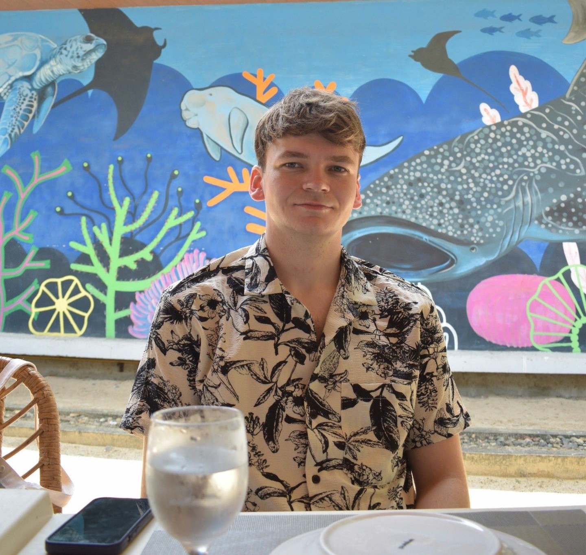

Mijn naam is Jeffrey Hooijberghs en ik studeer Graduaat Programmeren aan Thomas More.
Ik kan goed zelfstandig werken en heb veel doorzettingsvermogen.
Wanneer ik een probleem tegenkom, probeer ik het stap voor stap op te lossen.
Daarnaast werk ik graag met C# en vind ik het interessant om hiermee programma's te maken.
Een punt waar ik nog aan wil werken is dat ik soms impulsief kan zijn.
Daarom probeer ik eerst beter na te denken voordat ik beslissingen neem.
